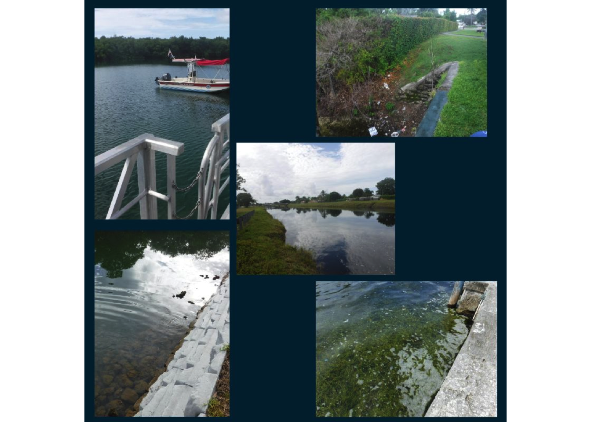

The project aims to engage citizens in raising awareness about water quality and invites them to suggest locations where they want to determine if the water is safe for swimming. Once these locations are submitted, Miami Waterkeeper employees will collect and analyze the data and then share the findings with the public. This initiative is intended to involve community members in understanding water quality issues and to provide them with scientific information addressing their concerns.
This project aims to provide information about enterococci bacteria in local water bodies. The study will occur once, focusing on locations suggested by citizens. It will be conducted during the wet season, characterized by high seasonal runoff, variability, and increased tourism. Alongside assessing enterococci bacteria levels, the project will analyze water characteristics such as temperature, pH, dissolved oxygen (DO), conductivity, and salinity. By examining these factors across different community locations, the project seeks to enhance understanding of water health in Miami.
The primary goal is to engage the community and offer bacterial information. Specifically, the project will answer the question: Are enterococci bacteria levels below 70 CFU/ MPN per 100ml in the submitted locations?
Miami Water Keepers participated in the Vizcaya Farmer’s Market, where community members suggested 11 sites for water quality analysis. Out of these, 6 sites were selected for sample collection.
## Sample.Site Latitude Longitude Sample.Day Sample.Date Sample.Time
## 1 Alhambra 25.73798 -80.28535 Monday 7/22/2024 8:30 AM
## 2 Twin Lakes 25.71820 -80.29796 Monday 7/22/2024 8:45 AM
## 3 Vizcaya 25.74433 -80.21064 Monday 7/22/2024 9:55 AM
## 4 Tamiami 25.73670 -80.39553 Monday 7/22/24 8:26 AM
## 5 Snapper Creek 25.69685 -80.35603 Monday 7/22/24 9:13 AM
## 6 Virginia Key Lake 25.74755 -80.14568 Monday 7/22/24 10:15 AM
## DateTime Weather Tidal_Conditions Current_Direction
## 1 7/22/2024, 8:30:00 AM cloudy Medium Still
## 2 7/22/2024, 8:45:00 AM cloudy Medium Towards
## 3 7/22/2024, 9:55:00 AM sunny Medium Towards
## 4 7/22/2024, 8:26:00 AM cloudy n/a Still
## 5 7/22/2024, 9:13:00 AM cloudy n/a Right to left
## 6 7/22/2024, 10:15:00 AM sunny High Towards
## AirTemperature WaterTemp DO_per DO SpecificConductance Salinityppt TurbNTU
## 1 27.00 29.788 55.7 4.22 0.748 0.36 4.23
## 2 28.00 31.823 113.6 8.31 0.579 0.28 2.20
## 3 30.00 31.636 67.4 4.31 40.372 25.62 0.21
## 4 27.78 29.580 69.2 5.27 0.530 0.25 0.29
## 5 28.89 28.702 18.5 1.43 0.537 0.26 0.64
## 6 29.44 30.857 75.3 4.76 49.885 32.48 0.25
## ChlRFU ChlugL BottomVisibility
## 1 1.38 4.60 NO
## 2 2.82 9.36 NO
## 3 0.24 0.77 NO
## 4 0.71 2.78 NO
## 5 0.66 2.55 NO
## 6 0.06 0.13 NO
## Notes
## 1 Fish, floating vegetation, film on surface
## 2 floating vegetation, film on surface, cloudy water
## 3 lots of floating vegetation, debris
## 4 Trash inside the canal and surroundings, traffic cone in canal, plastic bottles
## 5 canal is clean, no trash, debris, two canals meet to the right of the sampling location
## 6 clean and clear, fish
## EnterococciMPN pass_fail
## 1 31 Pass
## 2 295 Fail
## 3 20 Pass
## 4 122 Fail
## 5 86 Fail
## 6 15 PassThree of the six sites sampled met the acceptable criteria for enterococci levels, while three did not. The sites closer to the coast generally exhibited lower enterococci levels, indicating better water quality, whereas the inland sites showed higher levels. This pattern suggests that coastal influences contribute to improved water quality in terms of enterococci levels compared to inland areas. The elevated enterococci levels at inland sites may indicate potential sources of contamination or distinct environmental conditions affecting water quality. These findings highlight the importance of considering location and proximity to the coast in water quality assessments and underscore the need for enhanced water management practices in inland areas.
